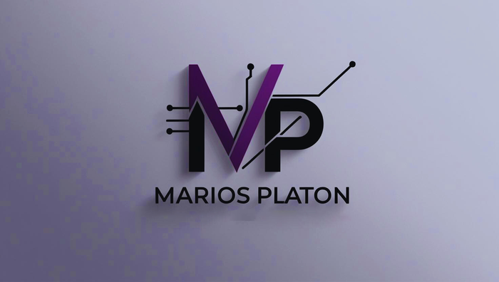
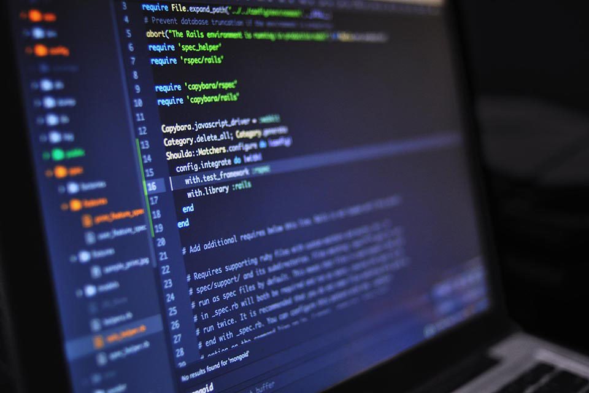

Goal
Create a playable game concept under a short event deadline.

A game developed during a Global Game Jam event in Patras, with rapid prototyping and collaboration under time constraints.

Create a playable game concept under a short event deadline.
Used Unity for rapid iteration and coordinated work with the team.
Prototyping, communication and game-development fundamentals.
The image may be illustrative. Source code or live-demo links will be added only after verification.